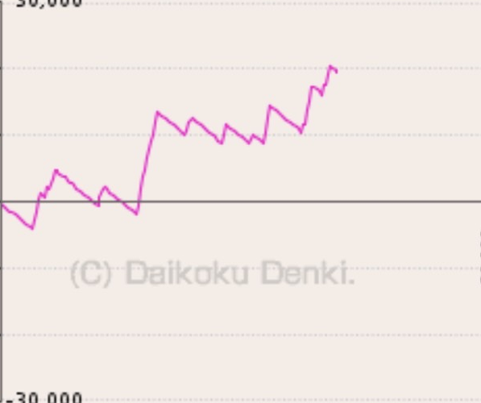
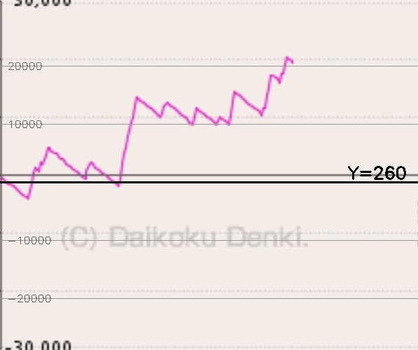
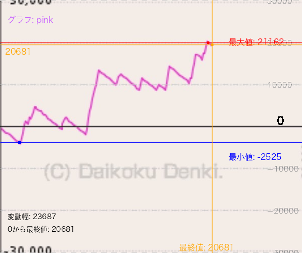

パチンコグラフ分析プロジェクト - 進捗レポート
✅ 完了済みタスク
- ディレクトリ整理 - テストファイルと分析ファイルをアーカイブディレクトリへ移動
- グラフ画像の切り抜き - 27枚の画像から597×500pxのグラフ部分を抽出
- ゼロライン検出 - Y=260で固定（全画像で共通）
- グリッド線と数値ラベルの追加 - 10px間隔のグリッド線を追加
- 日本語フォント対応 - macOS用のHiragino Sansフォントで文字化け解消
🔄 現在の課題
- スケール（1ピクセルあたりの値）の正確な決定
- 現在は1px = 120の仮定値を使用
- 10000、20000のグリッド線位置がずれている
- 正確なスケールの測定が必要
📊 技術仕様
| 項目 |
仕様 |
備考 |
| 切り抜きサイズ |
597×500ピクセル |
全画像で統一 |
| ゼロライン位置 |
Y=260 |
固定値（太いグレーの線） |
| グラフ範囲 |
±250ピクセル（ゼロラインから） |
上限：Y=10、下限：Y=510 |
| スケール（仮定） |
1ピクセル = 120 |
要調整 |
| 検出可能な色 |
ピンク、オレンジ、赤、青、緑 |
HSV色空間で検出 |
🖼️ サンプル画像
1. 元画像

パチンコ機の画面全体
2. 切り抜き後

グラフ部分のみ（597×500px）
3. ゼロラインテスト

Y=260にゼロライン、破線は10000単位
4. 分析結果

最大値・最小値・最終値を表示
📈 分析結果サンプル
📁 ファイル構成
pachi777/
├── graphs/
│ ├── original/ # 元画像（27枚）
│ ├── manual_crop/
│ │ ├── cropped/ # 切り抜き済み画像
│ │ └── overlays/ # 切り抜き位置確認用
│ ├── extracted_data/
│ │ ├── csv/ # 抽出データ（CSV）
│ │ ├── plots/ # グラフプロット
│ │ └── grayscale/ # グレースケール変換
│ └── analysis_overlay/ # 分析結果オーバーレイ
├── manual_graph_cropper.py # グラフ切り抜きツール
├── graph_data_reader.py # データ読み取りツール
├── graph_analyzer_overlay.py # 分析オーバーレイツール
└── batch_analyzer.py # バッチ処理ツール
🔧 主要コンポーネント
1. manual_graph_cropper.py
- オレンジバーとゼロラインを検出
- ゼロラインから±250pxで切り抜き
- 10px間隔のグリッド線を追加
2. graph_data_reader.py
- HSV色空間で各色のグラフラインを検出
- ピクセル座標から数値への変換
- CSVファイルへのデータ出力
3. graph_analyzer_overlay.py
- 最大値・最小値・最終値の計算
- 日本語ラベルの描画
- 統計情報の表示
🎯 次のステップ
- 正確なスケールの決定
- 実際のグリッド線位置を測定
- 1ピクセルあたりの正確な値を計算
- 全画像の処理
- 27枚すべてのグラフデータを抽出
- 統計レポートの生成
- 精度向上
📝 メモ
- 画像は2種類のパチンコ機から取得（P大海物語5とP新世紀エヴァンゲリオン）
- グラフの色はピンク（大海物語）とオレンジ（エヴァンゲリオン）
- Y軸の範囲は-30,000から+30,000
- 最終的な目標は全台の収支分析とレポート生成